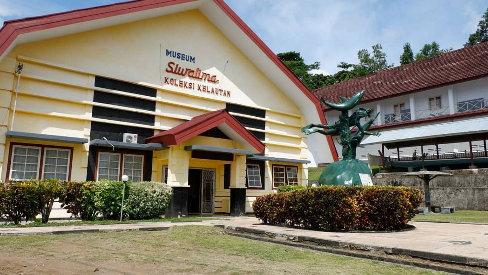
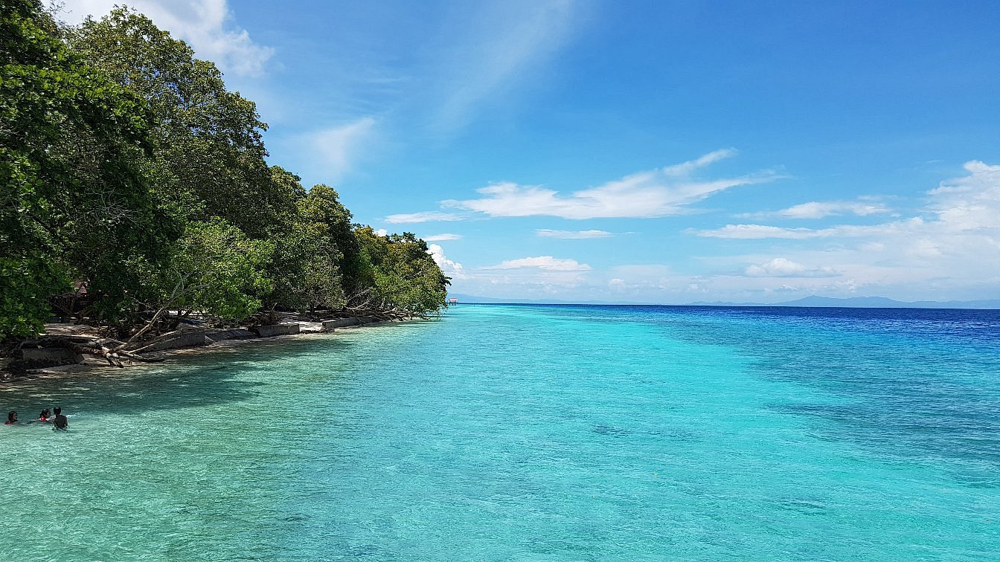

01
NATURE
Pintu Kota Beach
An iconic coastal formation where a natural opening in the rock faces the sea.
PLACES
Some places are destinations. Others are simply a good reason to slow down. Browse a small collection of Ambon-area landmarks, beaches, and cultural stops.
NATURE
An iconic coastal formation where a natural opening in the rock faces the sea.

CULTURE
A place to encounter Maluku's history, ethnography, archaeology, marine life, and cultural heritage.

CITY LANDMARK
A central Ambon landmark associated with peace, solidarity, and social harmony.

NATURE
A well-known beach near Ambon with light sand and calm coastal scenery.

NATURE
A breathtaking coastal gem located in Morella Village, famed not for sprawling white sands, but for its steep coral cliffs and impossibly clear, glass-like turquoise water.

NATURE
A pristine stretch of blindingly white sand meeting incredibly clear, gradient-hued turquoise waters on the eastern coast of Kota Ambon.